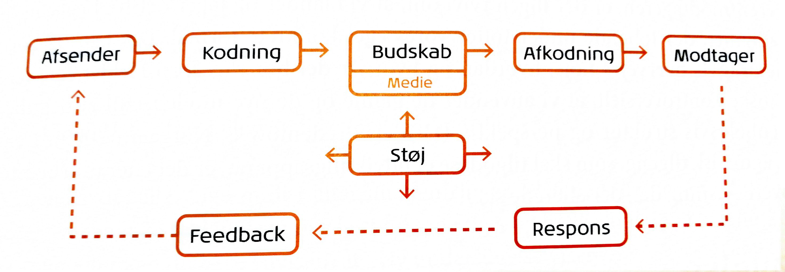
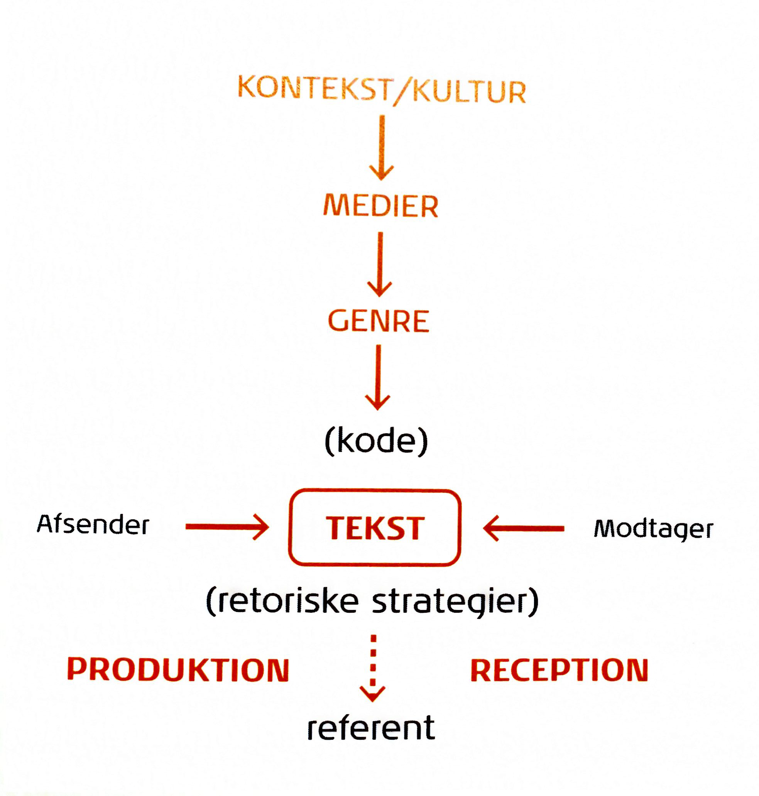

Mediesociologi er et felt indenfor research. Det handler om at finde frem til målgruppen, om individets forhold til omverdenen, samfundet og brugen af mediet. Mikrosociologi handler om os selv, vores relationer til det nære netværk såsom familie, venner, lærere, kærester mm. De har stor indflydelse på os. Makrosociologi er vinklen på strukturen og netværket i samfundet og verden. Det er upersonligt og lovdreven. Som boger i en stat bidrager man økonomisk til staten.
Philip Kotlers model viser hvordan afsender udsender et budskab ud som er kodet og hvordan modtager afkoder budskabet. Så reagere modtageren på budskabet og videregiver så respons til afsenderen. Afsender: Kodning: Budskab: Modtager: Støj: Respons: Feedback:

wikipedia
Afsender: Alle der skriver
Kodning
Budskab: Uddele viden verden rundt
Modtager: Alle der benytterne websitet
Støj: At alle kan redigere og tilføre information til siderne
Respons: Man bruger den viden man har fundet
Feedback: Folk gøre opmærksom hvis der er fejl på siderne i forhold til informationerne
Alle der skriver(afsender) – kodning – uddele viden (budskab) – Alle (modtager alt, alle kan redigere der inde (støj)
Folk gøre opmærksom hvis der er fejl(feedback) ---- Man bruger den viden man har fundet(respons)
Modellen er en klassiker indenfor dansk kommunikationsundervisning. Modellen blev udformet af Frandsen tilbage i 1997.
IMK-modellen bliver anset for at være modsvaret til Kotlers marketingtilgang.
Afsender: Er den der står bag kommunikationen. Afsenderen bestemmer også hvor og hvornår kommunikationen skal finde sted. I IMK modellen findes der både en ekstern og intern afsender Modtager: Teksten: Referent Kode: Det sprog modtageren skal kunne for at forstå afsenderen Kontekst/kultur Medier Genre
Internafsender: Wikipedia founder Eksternafsender: Alle der skriver, og tilføre information til siderne Teksten: information Eksternmodtager: Alle Kontekst/kultur: information til alle, over alt, altid Medier: Websitet – og hvis folk fortæller den viden de har fået videre. Genre: -Det kommunikative formål: Udbrede/få viden verden over. -Trækstrukturer: Har en høj sprogstil, i forhold til emne og for at ”vise” det er professionelle der skriver derinde. -Retoriske strategier: Der anvendes alt fra fagbegreber til billeder. Samt det kan oversættes til mange andre sprog og der fremvises kilder. Referenten: Viden, brand.